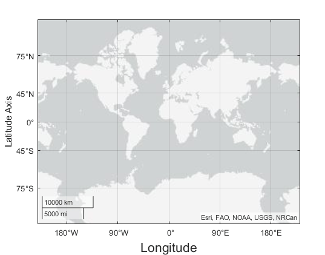

GeographicRuler Properties
Control axis with geographic values
GeographicRuler properties control the appearance
and behavior of the latitude axis and longitude axis in a GeographicAxes
object. Each individual axis has its own ruler object. By changing property values of the
ruler, you can modify certain aspects of a specific axis.
You can customize some aspects of the rulers by setting properties of the geographic axes
instead of setting properties of the rulers. For example, you can specify a different color
for each ruler by setting the Color property of each
GeographicRuler object. However, by setting the
AxisColor property of the GeographicAxes object, you
can keep the appearance of the rulers consistent.
Use dot notation to refer to a particular ruler and property. Access the ruler objects
through the LatitudeAxis or LongitudeAxis properties
of the GeographicAxes object.
geoplot(1:10,1:10) gx = gca; co = gx.LatitudeAxis.Color; gx.LatitudeAxis.Color = "blue";
Appearance
This property is read-only.
Minimum and maximum axis limits, returned as a two-element vector of the form
[min max].
To set the limits of a GeographicAxes object, use the geolimits
function.
Note
The values of the Limits properties for the latitude and
longitude axes match the values of the LatitudeLimits and
LongitudeLimits properties of the parent
GeographicAxes object, respectively.
Example: latlim = gx.LatitudeAxis.Limits;
Color of the axis line and labels, specified as an RGB triplet, a hexadecimal color code, a color name, or a short color name.
For a custom color, specify an RGB triplet or a hexadecimal color code.
An RGB triplet is a three-element row vector whose elements specify the intensities of the red, green, and blue components of the color. The intensities must be in the range
[0,1], for example,[0.4 0.6 0.7].A hexadecimal color code is a string scalar or character vector that starts with a hash symbol (
#) followed by three or six hexadecimal digits, which can range from0toF. The values are not case sensitive. Therefore, the color codes"#FF8800","#ff8800","#F80", and"#f80"are equivalent.
Alternatively, you can specify some common colors by name. This table lists the named color options, the equivalent RGB triplets, and the hexadecimal color codes.
| Color Name | Short Name | RGB Triplet | Hexadecimal Color Code | Appearance |
|---|---|---|---|---|
"red" | "r" | [1 0 0] | "#FF0000" |
|
"green" | "g" | [0 1 0] | "#00FF00" |
|
"blue" | "b" | [0 0 1] | "#0000FF" |
|
"cyan"
| "c" | [0 1 1] | "#00FFFF" |
|
"magenta" | "m" | [1 0 1] | "#FF00FF" |
|
"yellow" | "y" | [1 1 0] | "#FFFF00" |
|
"black" | "k" | [0 0 0] | "#000000" |
|
"white" | "w" | [1 1 1] | "#FFFFFF" |
|
"none" | Not applicable | Not applicable | Not applicable | No color |
This table lists the default color palettes for plots in the light and dark themes.
| Palette | Palette Colors |
|---|---|
Before R2025a: Most plots use these colors by default. |
|
|
|
You can get the RGB triplets and hexadecimal color codes for these palettes using the orderedcolors and rgb2hex functions. For example, get the RGB triplets for the "gem" palette and convert them to hexadecimal color codes.
RGB = orderedcolors("gem");
H = rgb2hex(RGB);Before R2023b: Get the RGB triplets using RGB =
get(groot,"FactoryAxesColorOrder").
Before R2024a: Get the hexadecimal color codes using H =
compose("#%02X%02X%02X",round(RGB*255)).
Note
Setting the AxisColor property for the parent axes sets the
Color properties for the ruler objects to the same value.
However, setting properties of the rulers does not affect the parent axes. To
prevent the axes property value from overriding the ruler property values, set the
axes value first, and then set the ruler values.
Example: gx.LatitudeAxis.Color = "b"
Example: gx.LatitudeAxis.Color = "blue"
Example: gx.LatitudeAxis.Color = [0.1 0.7 0.8];
Example: gx.LatitudeAxis.Color = "#0000FF";
Width of axis line and tick marks, specified as a positive value in point units. One point equals 1/72 inch.
Note
Setting the LineWidth property for the parent axes sets the
LineWidth properties for the ruler objects to the same value.
However, setting properties of the rulers does not affect the parent axes. To
prevent the axes property value from overriding the ruler property values, set the
axes value first, and then set the ruler values.
Example: gx.LatitudeAxis.LineWidth = 2;
Axis label, specified as a Text object.
To change existing text, set the String property of the
Text object. Use other properties to change the text appearance, such
as the font size or color.
This code shows how to change the text of the latitude axis label to
"Latitude Axis" and the font size of the longitude axis label to
16.
gx = geoaxes;
gx.LatitudeAxis.Label.String = "Latitude Axis";
gx.LongitudeAxis.Label.FontSize = 16;For a full list of options, see Text Properties.

Note
The text object is not a child of the ruler object, so it cannot be returned by
findobjand it does not use default text property values.The text object stored in this property is the same as the text object stored in the parent object's label property. Thus, you can modify the text object using either the ruler or the parent object's property. For example, setting the font size on a text object stored in a latitude axis ruler's
Labelproperty is the same as setting the font size on the text object stored in theLatitudeLabelproperty of the parent axes.
Axis label horizontal alignment, specified as one of the values from the table.
LabelHorizontalAlignment Value | Description | Appearance |
|---|---|---|
'center' | For a horizontal axis, the label is centered between the left and right edges of the plot box. For a vertical axis, the label is centered between the top and bottom edges of the plot box. |
|
'left' | For a horizontal axis, the label is aligned with the left edge of the plot box. For a vertical axis, the label is aligned with the bottom edge of the plot box. |
|
'right' | For a horizontal axis, the label is aligned with the right edge of the plot box. For a vertical axis, the label is aligned with the top edge of the plot box. |
|


Axis ruler visibility, specified as 'on' or
'off', or as numeric or logical 1
(true) or 0 (false). A value
of 'on' is equivalent to true, and
'off' is equivalent to false. Thus, you can use
the value of this property as a logical value. The value is stored as an on/off logical
value of type matlab.lang.OnOffSwitchState.
'on'— Display the axis ruler.'off'— Hide the axis ruler without deleting it. You still can access properties of an invisible axis ruler using the ruler object.
Example: gx.LatitudeAxis.Visible = "off";
Tick Values and Labels
Tick mark locations along the axis, specified as a vector of increasing values.
If you assign a value to this property, MATLAB® sets the TickValuesMode property to
'manual'.
Example: gx.LatitudeAxis.TickValues = [-15 -10 0 10
15];
Example: gx.LongitudeAxis.TickValues = 0:10:100;
Selection mode for the TickValues property, specified as one of
these values:
'auto'— Automatically select the tick values based on the limits of the map and the position (size) of the axes.'manual'— Use tick values that you specify. To specify the values, set theTickValuesproperty.
Tick mark labels, specified as a cell array of character vectors or a string array.
If you do not specify enough labels for all of the tick values, then the labels repeat.
The labels support TeX and LaTeX markup. See the
TickLabelInterpreter property for more information.
Example: gx.TickValues = [-66.5 -23.5 0 23.5 66.5];
Example: gx.LatitudeAxis.TickLabels = {'Antarctic Circle','Tropic of
Capricorn','Equator','Tropic of Cancer','Arctic Circle'};
If you set this property, MATLAB sets the TickLabelsMode property to
'manual'.
Data Types: char | string
Selection mode for the TickLabels property, specified as one of
these values:
'auto'— Automatically select the tick labels.'manual'— Use tick labels that you specify. To specify the labels, set theTickLabelsproperty.
Tick label color, specified as an RGB triplet, a hexadecimal color code, a color name, or a short name.
For a custom color, specify an RGB triplet or a hexadecimal color code.
An RGB triplet is a three-element row vector whose elements specify the intensities of the red, green, and blue components of the color. The intensities must be in the range
[0,1], for example,[0.4 0.6 0.7].A hexadecimal color code is a string scalar or character vector that starts with a hash symbol (
#) followed by three or six hexadecimal digits, which can range from0toF. The values are not case sensitive. Therefore, the color codes"#FF8800","#ff8800","#F80", and"#f80"are equivalent.
Alternatively, you can specify some common colors by name. This table lists the named color options, the equivalent RGB triplets, and the hexadecimal color codes.
| Color Name | Short Name | RGB Triplet | Hexadecimal Color Code | Appearance |
|---|---|---|---|---|
"red" | "r" | [1 0 0] | "#FF0000" |
|
"green" | "g" | [0 1 0] | "#00FF00" |
|
"blue" | "b" | [0 0 1] | "#0000FF" |
|
"cyan"
| "c" | [0 1 1] | "#00FFFF" |
|
"magenta" | "m" | [1 0 1] | "#FF00FF" |
|
"yellow" | "y" | [1 1 0] | "#FFFF00" |
|
"black" | "k" | [0 0 0] | "#000000" |
|
"white" | "w" | [1 1 1] | "#FFFFFF" |
|
"none" | Not applicable | Not applicable | Not applicable | No color |
This table lists the default color palettes for plots in the light and dark themes.
| Palette | Palette Colors |
|---|---|
Before R2025a: Most plots use these colors by default. |
|
|
|
You can get the RGB triplets and hexadecimal color codes for these palettes using the orderedcolors and rgb2hex functions. For example, get the RGB triplets for the "gem" palette and convert them to hexadecimal color codes.
RGB = orderedcolors("gem");
H = rgb2hex(RGB);Before R2023b: Get the RGB triplets using RGB =
get(groot,"FactoryAxesColorOrder").
Before R2024a: Get the hexadecimal color codes using H =
compose("#%02X%02X%02X",round(RGB*255)).
Note
Setting the ruler’s Color property also sets the
TickLabelColor property to the same value. However, setting
the TickLabelColor property does not change the
Color property. To prevent the Color
property value from overriding the TickLabelColor property
value, set the Color property first, and then set the
TickLabelColor property.
Interpretation of tick label characters, specified as one of these values:
'tex'— Interpret characters using a subset of TeX markup.'latex'— Interpret characters using LaTeX markup.'none'— Display literal characters.
For more information about these interpreters, see the
Interpreter property on the Text Properties reference page.
Example: gx.LatitudeAxis.TickLabelInterpreter =
'latex';
Tick label format, specified as one of the following values.
| Format | Description | Example |
|---|---|---|
"dd" | Decimal degrees plus compass direction | 23°N |
"dm" | Degrees and decimal minutes plus compass direction | 18°30'W |
"dms" (default) | Degrees, minutes, and decimal seconds plus compass direction | 110°06'18.5"E |
"-dd" | Decimal degrees with a minus sign (–) to indicate south and west | -115.25° |
"-dm" | Degrees and decimal minutes with a minus sign (–) to indicate south and west | -5°45.5' |
"-dms" | Degrees, minutes, and decimal seconds with a minus sign (–) to indicate south and west | -3°21'05" |
You can also specify the tick label format using the geotickformat function.
Note
Setting the TickLabelFormat property for the parent axes
sets the TickLabelFormat properties for the ruler objects to
the same value. However, setting properties of the rulers does not affect the parent
axes. To prevent the axes property value from overriding the ruler property values,
set the axes value first, and then set the ruler values.
Example: gx.LatitudeAxis.TickLabelFormat = "dd";
Rotation of the tick labels, specified as a scalar value in degrees. Positive values give counterclockwise rotation. Negative values give clockwise rotation.
If you assign a value to this property, then MATLAB sets the TickLabelRotation property to
'manual'.
Example: gx.LatitudeAxis.TickLabelRotation = -45;
Example: gx.LongitudeAxis.TickLabelRotation = 45;
Selection mode for the TickLabelRotation property, specified as
one of these values:
'auto'— Object automatically selects the tick label rotation.'manual'— Use a tick label rotation that you specify. To specify the rotation, set theTickLabelRotationproperty.
Selection mode for the TickDirection property, specified as one
of these values:
'auto'— Automatically select the tick direction.'manual'— Use a tick direction that you specify. To specify the tick direction, set theTickDirectionproperty.
Tick mark length, specified as a two-element vector of the form [length
unused]. The first element is the tick mark length. The second element is
unused by the geographic ruler, but is included for consistency with other ruler
objects. Specify the values in units normalized relative to the longest axes
dimension.
Note
Setting the TickLength property for the parent axes sets
the TickLength properties for the ruler objects to the same
value. However, setting properties of the rulers does not affect the parent axes. To
prevent the axes property value from overriding the ruler property values, set the
axes value first, and then set the ruler values.
Example: gx.LatitudeAxis.TickLength = [0.04 0];